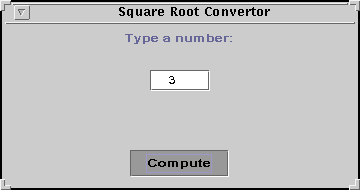
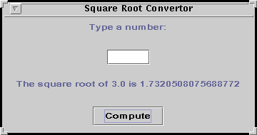
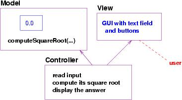
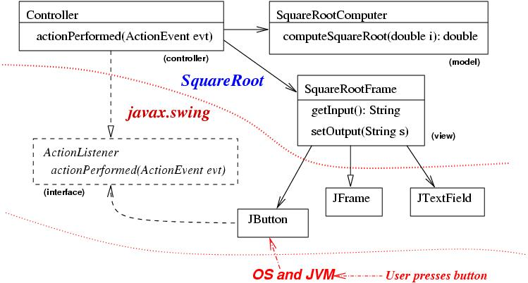

To help, the Java packages, javax.swing and java.awt, provide classes that you use for constructing windows, buttons, text fields, and so on. These classes come ``unconnected'' and you must connect the classes in a standard way to generate GUI's that look and operate properly.
We review GUI construction via an example.
Say that a user wants a program that computes square roots and wants the input/output processed with a GUI. Here is a sample use-case: The GUI asks its user to type a number, and when the number is typed and the Compute button is pressed, the program computes the number's square root and presents the answer:
 
We must write a program with this behavior. The program's component structure fits the model-view-controller pattern, where the model holds the number upon which we compute the square root. The controller's algorithm is simple:
When the Compute button is pressed,
Here is a picture of the application's component structure:
Notice that the algorithm starts when the user presses the Compute button. This means the controller is somehow connected to the Compute button in the GUI.
To build the GUI, we use javax.swing's prebuilt classes, JFrame, JButton, and JTextField (this is where the input is typed), and JLabel (this displays the answer). (Of course, we need not read the coding inside these classes; we assume the classes are properly written and we construct objects from them.)
We import the components in the package with the statement,
import javax.swing.*;
This style of programming --- relying on components that we do not ourselves write --- is crucial to modern-day programming. To connect the components from javax.swing to the ones we will write, we must use an important concept, called an interface.
So, we must take a small diversion from the design of the example to learn a bit about Java interfaces.
(If you wish to preview the results of the exercise, you can find the package that contains this example and the API at http://www.cis.ksu.edu/~schmidt/300s05/Lectures/GraphicsExample. )
A Java interface is a powerful tool for connecting together a package we write to a package other people write. Here is a small story to introduce how to use interfaces:
Say we write a package P, which contains class C, and class C needs to use some methods, m1 and m2, that we will not write --- Someone else will write them and place them into another class.
So, we pretend that the missing methods belong to a class named Helper:
package P;
/** class C needs the help of two methods, m1 and m2. They are missing,
* and we assume that their codings will be supplied in a Helper object. */
public class C
{ private Helper helpme; // Helper is the name we use for the missing component
public C(Helper h) // When someone constructs a new C-object,
// the address of a ``Helper'' object is supplied.
{ ... helpme = h; ... }
... helpme.m1() ... helpme.m2() ... // Invoke the missing methods.
}
But what is Helper? It is not a class ---it is the
name of a java interface,
and we must write this code also, which goes with class C:
package P;
/** interface Helper lists the missing methods */
public interface Helper
{ public void m1(); // There is only a header line, no coding!
public void m2(); // Note the semicolons at the end of the header lines.
}
class C assumes that some
``helper'' class, of type Helper, will contain the codings of the
needed methods, m1 and m2.
Interface Helper lists the names of the methods.
Next, when the methods are written, they are placed in a class that ``implements'' the interface:
package Q;
import P.*; // import interface Helper
public class Worker implements Helper // the last two words assert
// that this class can be used as a ``Helper''
{ ...
public void m1()
{ ... code for m1 goes here ... }
public void m2()
{ ... code for m2 goes here ... }
... other methods may go here ...
}
The example shows us that the codings of m1 and m2
are exactly what are intended for others to use; this is indicated
by the crucial phrase, implements Helper, in the class's
header line. The phrase indicates that class Worker can
be used wherever a Helper is needed.
Because they agree on the same interface, the two components may be ``connected'': This can be done with a ``start-up'' class that makes the connection. The start-up class for the example might look like this:
import P.*;
import Q.*;
/** We use the main method to construct and connect together the
* objects of the program. */
public class Start
{ public static void main(String[] a)
{ ...
Worker w = new Worker();
C x = new C(w); // ``connect'' w to x
...
}
}
The start-up class constructs a Worker, w,
which implements the
Helper interface. Then, the start-up class
``connects'' the w to the C-object, x,
that requires a Helper. The connection is done by
parameter passing --- it works!
Parameter passing is a standard way of connecting together objects.
In summary:
With the background on Java interfaces, we can understand better how we connect the classes in the javax.swing package to the square-root application that we are designing:
Classes JFrame, JButton, etc., of javax.swing are already written, and they use a standardized connection, named interface ActionListener. The square-root program we write will connect its controller to the GUI via interface ActionListener.
Here are a few technical details:
To understand Step 2, let's examine the crucial program pieces. First, the connection point is defined by interface ActionListener:
package javax.swing;
public interface ActionListener
{ public void actionPerformed(ActionEvent e); }
It says that the controller connects to the JButton
by implementing ActionListener. This means the
controller's algorithm must be coded in a method named
actionPerformed.
The controller that we write must look like this:
package SquareRoot;
import javax.swing.*;
public class Controller implements ActionListener
{ ...
/** actionPerformed holds the algorithm, which executes when the
* Compute button is pressed. */
public void actionPerformed(ActionEvent evt)
{ ... read integer
... compute square root
... display result
}
}
The final component in the puzzle is class JButton, which is pre-written and found in package javax.swing:
package javax.swing;
public class JButton
{
private ActionListener handler; // Remembers the object that will
// be contacted when this button is pressed
...
/** This method connects the handler object to the button: */
public void addActionListener(ActionListener x)
{ handler = x; }
...
// later in the coding of JButton, this instruction is started by the OS/JVM
// when there is a mouse click:
... handler.actionPerformed(...); ...
}
This class diagram for the square root program shows us how the components connect together:
There are two packages, SquareRoot and javax.swing. The view is constructed from SquareRootFrame, a class we write that extends JFrame. The frame uses JButton and JTextField. The model component is a single method that knows how to compute a square root. The controller holds its algorithm inside method actionPerformed.
As described above, when the user presses the Compute button, this executes a part of JButton, that invokes a method named actionPerformed. Because Controller is connected to JButton, via the ActionListener interface, the actionPerformed method in the Controller is executed.
The various lines and arrow heads in the diagram are written in the style of the UML modelling language. Here are their meanings:
class Controller implements ActionListenerSo, a Controller object is capable of receiving the actionPerformed messages.
The diagram shows that Controller and SquareRootFrame ``connect'' across package boundaries. If a component in one package wishes to use components in another package, then it must have a Java import statement. For example, the coding of class SquareRootFrame looks like this:
package SquareRoot;
import javax.swing.*;
...
public class SquareRootFrame extends JFrame
{ ...
private JTextField input_text = new JTextField(...);
...
}
The import statement makes the classes in
package javax.swing usable
within class SquareRootFrame.
(Recall that extends JFrame means that SquareRootFrame
absorbs the code in class JFrame and appends its own code,
thus generating a
customized variant of frame. Of course,
the declaration of input_text defines a private variable
that holds the address of a JTextField object, which is
used in the customized frame.)
package SquareRoot;
/** SquareRootComputer computes square roots */
public class SquareRootComputer
{ // there really is no need to construct a variable cell to hold
// the number that we square-root, so we won't.
public SquareRootComputer() { }
/** computeSquareRoot computes a square root
* @param i - the number
* @return i's square root */
public double computeSquareRoot(double i)
{ double answer = 0;
if ( i < 0 )
{ throw new RuntimeException("negative number: " + i); }
else { answer = Math.sqrt(i); }
return answer; }
}
package SquareRoot;
import javax.swing.*;
import java.awt.event.*;
/** Controller implements a button that computes square roots */
public class Controller implements ActionListener
{ private SquareRootComputer calc; // model object
private SquareRootFrame view; // view object
/** Constructor Controller constructs the button
* @param v - the address of the view object
* @param c - the address of the model object
public Controller(SquareRootFrame v, SquareRootComputer c)
{ view = v;
calc = c;
// tell the view to connect its Compute button to this controller:
view.connectControllerToButton(this);
}
/** actionPerformed computes and displays a square root.
* The method is called when the view's Computer button is pressed */
public void actionPerformed(ActionEvent evt)
{ String answer = "";
try { String s = view.getInput().trim();
double number = new Double(s).doubleValue();
double root = calc.computeSquareRoot(number);
answer = "The square root of " + number + " is " + root;
}
catch(RuntimeException e) // if s is erroneous, an exception occurs
{ answer = "Bad input error:" + e.getMessage(); }
view.setOutput(answer);
}
}
package SquareRoot;
import java.awt.*;
import java.awt.event.*;
import javax.swing.*;
/** SquareRootFrame shows the input and output for square-root computation*/
public class SquareRootFrame extends JFrame
{ private String BLANKS = " ";
// input is typed into this field:
private JTextField input_text = new JTextField(BLANKS, 6);
// the answer is displayed by this label:
private JLabel answer = new JLabel(BLANKS);
// this is the button that triggers square-root computation:
private JButton compute_button = new JButton("Compute");
/** SquareRootFrame assembles and displays the frame */
public SquareRootFrame()
{ // here are the usual, painful steps for placing graphical
// components into a JFrame:
Container cp = getContentPane();
cp.setLayout(new GridLayout(4, 1));
JPanel p1 = new JPanel(new FlowLayout());
p1.add(new JLabel("Type a number:"));
cp.add(p1);
JPanel p2 = new JPanel(new FlowLayout());
p2.add(input_text);
cp.add(p2);
JPanel p3 = new JPanel(new FlowLayout());
p3.add(answer);
cp.add(p3);
JPanel p4 = new JPanel(new FlowLayout());
p4.add(compute_button);
cp.add(p4);
setSize(350, 160);
setTitle("Square Root Convertor");
setVisible(true);
}
/** getInput returns the input the user typed into the text field
* @return the string typed in the text field */
public String getInput()
{ return input_text.getText(); }
/** setOutput displays a new answer and clears the input text field.
* @param s - the new answer displayed */
public void setOutput(String s)
{ answer.setText(s);
input_text.setText(BLANKS);
}
/** connectControllerToButton connects the controller object to
* the Compute button
* @param con - the controller object */
public void connectControllerToButton(Controller con)
{ compute_button.addActionListener(con); } // addActionListener is a
// method in JButton that connects the button press to the object
// that responds to the button press
}
The three methods included in the view are invoked by the controller
to read the input number, to display the answer, and to connect
the controller to the button that triggers the computation.
package SquareRoot;
/** Start starts the square-root calculator application. */
public class Start
{ public static void main(String[] args)
{ SquareRootComputer model = new SquareRootComputer();
SquareRootFrame view = new SquareRootFrame();
Controller con = new Controller(view,model);
}
}
The completed square-root computer, called package SquareRoot,
can be downloaded at
http://www.cis.ksu.edu/~schmidt/300s05/Lectures/GraphicsExample.
Looking from the other side, the writers of the java.awt.event package were able to write class JButton, which receives button presses, even though the writers did not know which class would eventually handle the button presses---they made JButton send actionPerformed messages to whatever object connects to the ActionListener interface.
The two components (JButton and the controller) that connect to interface ActionListener are separate, and one can be unplugged and replaced by another without causing harm. Interfaces are a powerful tool for building program subassemblies that can connect to other, unknown assemblies.
The preceding is a practical explanation of Java interfaces---a Java interface lets one class refer to another class that is not yet written. But there is a more important, philosophical viewpoint: A Java interface is a description (or specification) of a ``connection'' or ``plug-in'' point, where one class (the one that implements the interface) connects to another class that uses/invokes the methods that are listed in the interface file.
In a later lecture, we learn to write our own interfaces.